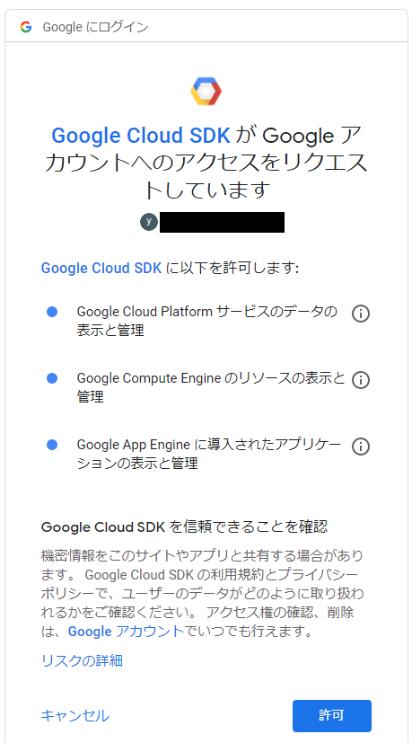
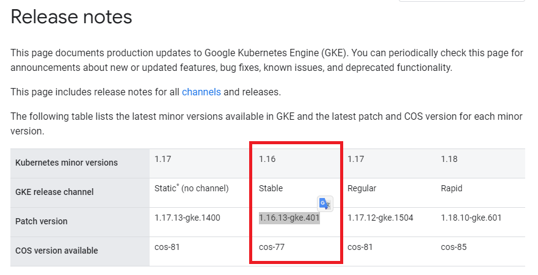
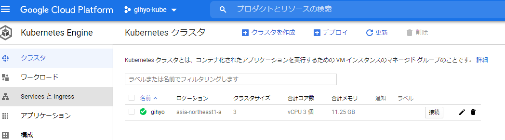

Docker/Kubernetes 実践コンテナ開発入門：書籍案内｜技術評論社
IngressはServiceよりも高機能なリソースでHTTP/HTTPSのようにパスベースで転送先のServiceを切り替えるといった制御ができるリソースでした。
次の章からは実践的なk8sでのアプリケーション構築やオンプレミスでのk8sクラスタの構築をやっていくようです。
- オンプレミス
- 自社内の物理サーバーで管理
6.Kubernetesのデプロイ・クラスタ構築
- Google Kubernetes Engineでのクラウド構築
- Kubersprayによるオンプレミス構築
6.1 Google Kubernetes Engineのセットアップ
-
クラウドのデプロイにGKEを利用
-
デプロイ方法やリソースの扱い方を学ぶ
-
GKEの無料トライアル登録画面

6.1.1 GCPプロジェクトの作成
- 初回は「My First Project」というプロジェクトが作られている。
- プロジェクト名を「gihyo-kube」に変更する

6.1.2 Google Cloud SDK（gcloud）のセットアップ
-
Google Cloud SDK ※以降、gcloud
- GCPのサービスをコマンドラインから操作するためのツール
-
gcloudのインストール
-
gcloudのコマンド操作はPowerShellで行います
-
gcloudのバージョン確認
$ gcloud version
Google Cloud SDK 317.0.0
bq 2.0.62
core 2020.10.30
gsutil 4.54
- コンポーネントのバージョンアップを行う
$ gcloud components update
To help improve the quality of this product, we collect anonymized
usage data
and anonymized stacktraces when crashes are encountered; additional
information
is available at <https://cloud.google.com/sdk/usage-statistics>. This
data is
handled in accordance with our privacy policy
<https://policies.google.com/privacy>. You may choose to opt in this
collection now (by choosing 'Y' at the below prompt), or at any time
in the
future by running the following command:
gcloud config set disable_usage_reporting false
Do you want to opt-in (y/N)? y
All components are up to date.
- gcloudの認証を行う
$ gcloud auth login
- gcloud認証画面

- gcloudで対象のプロジェクトIDを設定
$ gcloud config set project xxxxxx
Updated property [core/project].
- デフォルトリージョンを指定
- asia-northeast1-aは東京リージョン
$ gcloud config set compute/zone asia-northeast1-a
Updated property [compute/zone].
6.1.3 Kubernetesクラスタの作成
- クラスタの作成
- –cluster-version
- クラスタのバージョン
- –num-nodes
- ノードとなるインスタンスの数
- –cluster-version
$ gcloud container clusters create gihyo --cluster-version=1.10.4-gke.2 --machine-type=n1-standard-1 --num-nodes=3
WARNING: Warning: basic authentication is deprecated, and will be removed in GKE control plane versions 1.19 and newer. For a list of recommended authentication methods, see: https://cloud.google.com/kubernetes-engine/docs/how-to/api-server-authentication
WARNING: Currently VPC-native is not the default mode during cluster creation. In the future, this will become the default mode and can be disabled using `--no-enable-ip-alias` flag. Use `--[no-]enable-ip-alias` flag to suppress this warning.
WARNING: Newly created clusters and node-pools will have node auto-upgrade enabled by default. This can be disabled using the `--no-enable-autoupgrade` flag.
WARNING: Starting with version 1.18, clusters will have shielded GKE nodes by default.
WARNING: Your Pod address range (`--cluster-ipv4-cidr`) can accommodate at most 1008 node(s).
ERROR: (gcloud.container.clusters.create) ResponseError: code=400, message=Failed precondition when calling the ServiceConsumerManager: tenantmanager::185014: Consumer 813247996088 should enable service:container.googleapis.com before generating a service account.
- テキストが古くなって動かない
- テキストの正誤表の情報をもとにやってみる。
$ gcloud container clusters create gihyo --cluster-version=1.15.7-gke.2 --machine-type=n1-standard-1 --num-nodes=3
WARNING: Warning: basic authentication is deprecated, and will be removed in GKE control plane versions 1.19 and newer. For a list of recommended authentication methods, see: https://cloud.google.com/kubernetes-engine/docs/how-to/api-server-authentication
WARNING: Currently VPC-native is not the default mode during cluster creation. In the future, this will become the default mode and can be disabled using `--no-enable-ip-alias` flag. Use `--[no-]enable-ip-alias` flag to suppress this warning.
WARNING: Newly created clusters and node-pools will have node auto-upgrade enabled by default. This can be disabled using the `--no-enable-autoupgrade` flag.
WARNING: Starting with version 1.18, clusters will have shielded GKE nodes by default.
WARNING: Your Pod address range (`--cluster-ipv4-cidr`) can accommodate at most 1008 node(s).
ERROR: (gcloud.container.clusters.create) ResponseError: code=400, message=Master version "1.15.7-gke.2" is unsupported.
-
これも古かったらしい…
-
公式を見ると利用できないバージョンに載っていた
-
リリースノートで最新の安定版でやることにしました。

$ gcloud container clusters create gihyo --cluster-version=1.16.13-gke.401 --machine-type=n1-standard-1 --num-nodes=3
WARNING: Warning: basic authentication is deprecated, and will be removed in GKE control plane versions 1.19 and newer. For a list of recommended authentication methods, see: https://cloud.google.com/kubernetes-engine/docs/how-to/api-server-authentication
WARNING: Currently VPC-native is not the default mode during cluster creation. In the future, this will become the default mode and can be disabled using `--no-enable-ip-alias` flag. Use `--[no-]enable-ip-alias` flag to suppress this warning.
WARNING: Newly created clusters and node-pools will have node auto-upgrade enabled by default. This can be disabled using the `--no-enable-autoupgrade` flag.
WARNING: Starting with version 1.18, clusters will have shielded GKE nodes by default.
WARNING: Your Pod address range (`--cluster-ipv4-cidr`) can accommodate at most 1008 node(s).
Creating cluster gihyo in asia-northeast1-a... Cluster is being health-checked (master is healthy)...done.
Created [https://container.googleapis.com/v1/projects/marine-proposal-295213/zones/asia-northeast1-a/clusters/gihyo].
To inspect the contents of your cluster, go to: https://console.cloud.google.com/kubernetes/workload_/gcloud/asia-northeast1-a/gihyo?project=marine-proposal-295213
kubeconfig entry generated for gihyo.
NAME LOCATION MASTER_VERSION MASTER_IP MACHINE_TYPE NODE_VERSION NUM_NODES STATUS
gihyo asia-northeast1-a 1.16.13-gke.401 35.221.107.8 n1-standard-1 1.16.13-gke.401 3 RUNNING
- GCPでクラスタ確認

- gcloud経由でkubectlに認証情報を設定。
$ gcloud container clusters get-credentials gihyo
Fetching cluster endpoint and auth data.
kubeconfig entry generated for gihyo.
- kubectlでクラスタのノード一覧を取得
- GKEのノードが表示される
$ kubectl get nodes
NAME STATUS ROLES AGE VERSION
gke-gihyo-default-pool-17a578e7-bk9s Ready <none> 4m31s v1.16.13-gke.401
gke-gihyo-default-pool-17a578e7-jvkh Ready <none> 4m41s v1.16.13-gke.401
gke-gihyo-default-pool-17a578e7-qkpj Ready <none> 4m41s v1.16.13-gke.401
- 作成したクラスタのダッシュボードk8s APIへのプロキシを起動
$ kubectl proxy
Starting to serve on 127.0.0.1:8001
- http://127.0.0.1:8001/ui にアクセス
コラム kubectx
- kubectx
- コンテキストのスイッチに便利
- kubens
- デフォルトのNamespaceを簡単に設定できる
今日の学び
- クラスタ作成時のクラスタのバージョンはリリースノートを確認して現在も使えるか確認する。
- gcloudでのクラスタ作成やGCPの画面でのクラスタの確認などを行った。